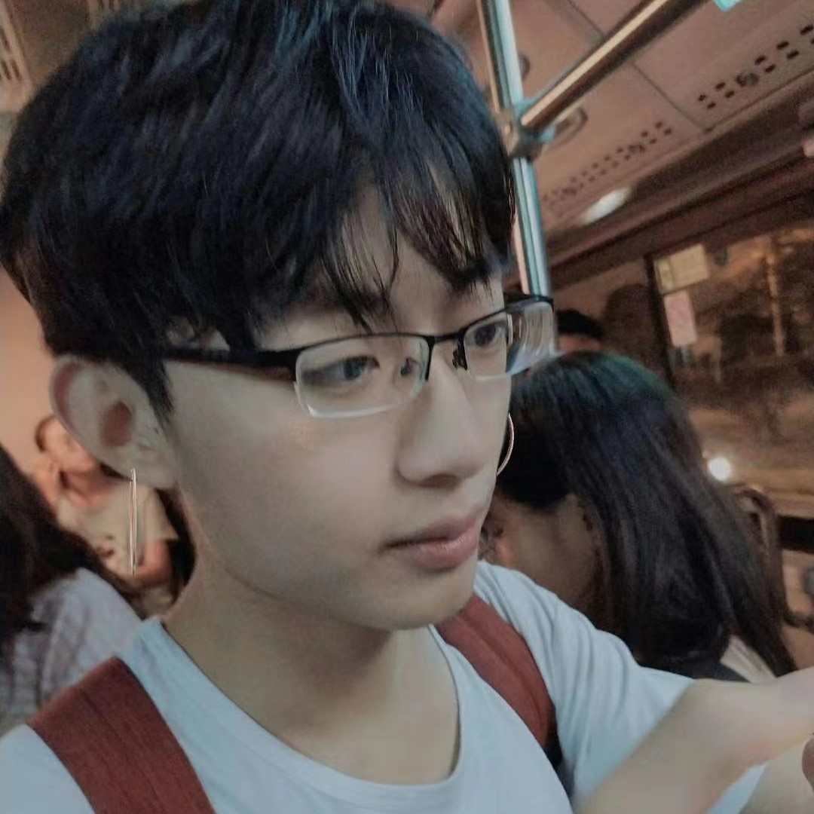

{kind=link}
Finally graduated!
终于毕业了！
Hello to everyone who sees this webpage. My name is LY Song, and I am from Qingdao, China. I work at Sun Yat-sen University in Guangzhou and am also involved in a startup with my mentor. Out of interest, I created this webpage and wish to leave my mark in the online world. I consider myself a kind, optimistic, and warm-hearted person who values genuine emotions and cherishes the trust of others. I aspire to meet people from different walks of life and explore the fascinating unknowns in the world. Please feel free to contact me for any exchanges or communications.
每个看到这个网页的人，你们好。我叫宋林峪，来自中国青岛，在广州中山大学进行科研工作，同时也在跟导师一起创业。出于兴趣做了这个网页，想在互联网世界里留下自己的痕迹。我自认为是个善良、乐观、温暖的人，喜欢真诚的情感，享受他人的信任。我想要认识生活中没见过的不同类型的人，想要探索世界里新奇的充满未知的事物。欢迎大家与我联系交流~
终于毕业了！
我们组织的企业家交流Party
2020年跨年
巨蟹座朋友们的生日快乐时刻
陌生笔友们的书信往来
境由心生
I am someone who enjoys exploring the world. I delight in getting to know people from different backgrounds and experiences, and I relish learning about their stories and insights. I cherish the authenticity and trust that my friends bring into my life, and I treasure every emotional connection and bond that has been formed with effort and care.
我是个很喜欢探索世界的人。我喜欢认识世界上有不同性格和经历的人，喜欢了解不同人的故事和感悟。我享受朋友带给我的真诚和信任，我也珍惜每一段来之不易的情感和羁绊。左图由大学一位很好的朋友拍于地铁上。
I often surf at the forefront of the Internet. I am a long-time user of many forums on the dark web, but I never post or engage in illegal activities. I also keep a close eye on the cryptocurrency market, but I am cautious about making significant investments. I have a strong interest in exploring cutting-edge information technologies, such as ChatGPT, Claude, and Midjourney, among others in the field of AIGC. My research area is focused on the application of AI in flexible display technology. The photo on the right was taken by my mentor during a late-night work session at NAIXUE.
我时常冲浪在互联网最前沿。我是暗网很多论坛的老用户，不过我从不发言也不做违法的事情。我也持续关注币圈，但从不轻易大量买入。我也很喜欢探索前沿信息技术，比如ChatGPT、Claude和Midjourney等AIGC。我的研究领域是AI在柔性显示技术中的应用。右图由一起加班的导师拍于奈雪的茶。
I am quite lazy, so it's unlikely that this webpage will be updated in the future
本人比较懒，该网页后续应该不会继续更新
If anyone contacts me, I will respond seriously
如果大家联系我，我都会认真回复
邮箱地址/Email: songly.it@gmail.com
其他链接/Other links: songlinyu.com
{kind=link}
{kind=link}
{kind=link}
{kind=link}
{kind=link}